Replication of a published Transition SST + SBES
simulation of a Darrieus vertical-axis wind turbine,
followed by an extension of the model into far-field
acoustic prediction using the Ffowcs Williams-Hawkings
analogy.
SoftwareANSYS Fluent · MATLAB
Flow modelTransition SST + SBES
Operating pointTSR 3.3 · 9 m/s
AcousticsFW-H · 4 receivers
01
Project setup
Reproducing a published aerodynamic model before
extending it into acoustics
Aim and scope
This project began as a replication study.
My starting point was Syawitri, Yao, Yao and
Chandra (2020),
Assessment of stress-blended eddy simulation
model for accurate performance prediction of
vertical axis wind turbine
.
Their study used
Transition SST + Stress-Blended Eddy
Simulation (SBES)
in ANSYS Fluent to predict the unsteady aerodynamic
performance of a three-bladed Darrieus
vertical-axis wind turbine.
My first objective was to reproduce that aerodynamic
behaviour as closely as possible. Once I had a
transient model running, I extended the study beyond
the original paper by applying the
Ffowcs Williams-Hawkings (FW-H)
acoustic analogy and analysing the predicted sound
at four receiver positions around the turbine.
That made the project a two-stage investigation:
reproduce the aerodynamic behaviour of the reference
model, then use the resulting unsteady flow field as
the basis for an aeroacoustic analysis.
The second stage depended on the first. The acoustic
model could only be as reliable as the transient
aerodynamic solution feeding it.
01
Reproduce
Rebuild the published turbine geometry
and computational domain.
→
02
Simulate
Apply the Transition SST + SBES
methodology.
→
03
Compare
Assess forces, power and vortex behaviour
against published results.
→
04
Extend
Use the transient solution for
FW-H acoustic prediction.
Reference study and geometry
The project used the standard three-bladed Darrieus
VAWT geometry associated with the Castelli benchmark,
while the simulation strategy was aligned primarily
with Syawitri et al. (2020).
Syawitri et al. investigated tip-speed ratios between
1.44 and 3.3 using Transition SST + SBES. I concentrated
the final study on TSR = 3.3 and used
the same approximate
1° rotor movement per timestep
adopted in the reference work.
The reference paper therefore gave me more than a
general methodology. It provided a specific aerodynamic
result and flow-field behaviour against which I could
assess my own model before attempting the acoustic
extension.
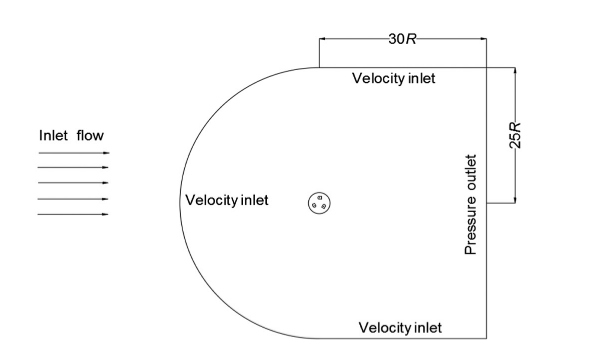
External computational domain, including the
velocity-inlet and pressure-outlet boundaries.
Source: Syawitri et al. (2020).
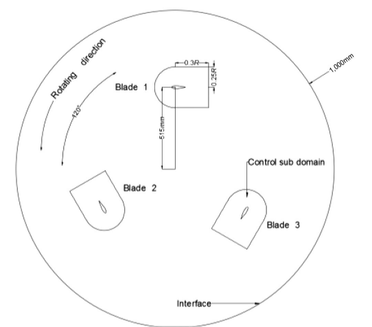
Three-bladed rotor geometry and rotating
control sub-domain used as the basis of my model.
Source: Syawitri et al. (2020).
Freestream velocity9 m/s
Tip-speed ratio3.3
Reynolds number≈ 172,465
Air density1.225 kg/m³
Timestep≈ 3 × 10−4 s
Angular increment≈ 1°
02
Numerical approach
Developing a transient model capable of resolving
blade-wake interaction
Solver and turbulence treatment
A Darrieus turbine experiences strongly unsteady
flow. As each blade rotates, its relative velocity
and angle of attack change continuously, while the
blade also encounters the disturbed wake generated
earlier in the rotor cycle.
The resulting flow contains dynamic stall, vortex
shedding and rapidly changing aerodynamic loads.
I therefore followed Syawitri et al. in using
Transition SST + SBES.
Transition SST provides the near-wall RANS
treatment, while SBES allows more LES-like
resolution in separated regions where the mesh can
support it. This was particularly relevant because
the vortex structures were important to both the
aerodynamic performance and the later acoustic
calculation.
The turbine itself was modelled using a
sliding mesh, with the blades
contained within a rotating core surrounded by a
stationary far-field domain.
Mesh structure
I divided the mesh into three broad levels of
refinement: the static far-field, the rotating core,
and local bodies of influence around each aerofoil.
The BOIs provided additional resolution around the
blades and their wakes, where the vortex structures
relevant to the SBES solution were expected to
develop.
Far-field
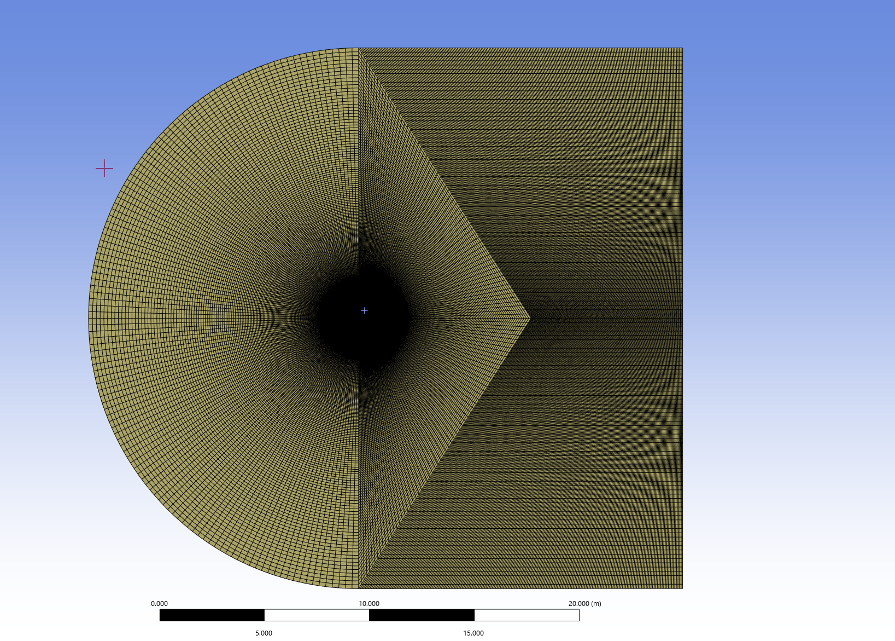
Static far-field surrounding the rotating turbine domain.
Rotating core
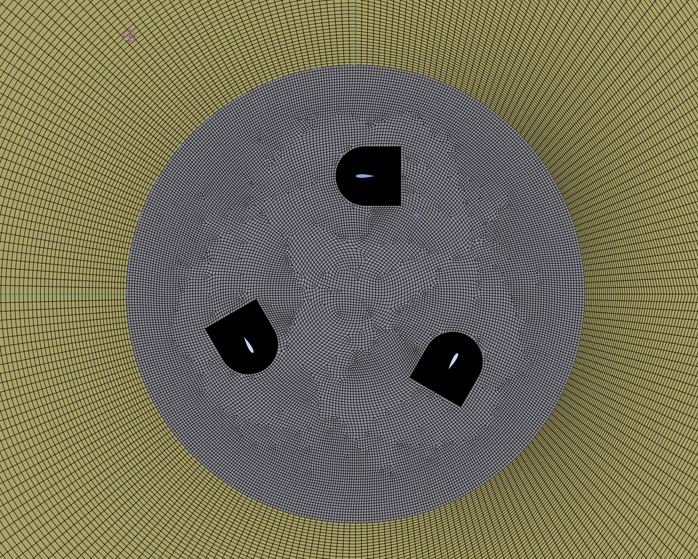
Sliding-mesh rotating region containing all three blades.
Body of influence
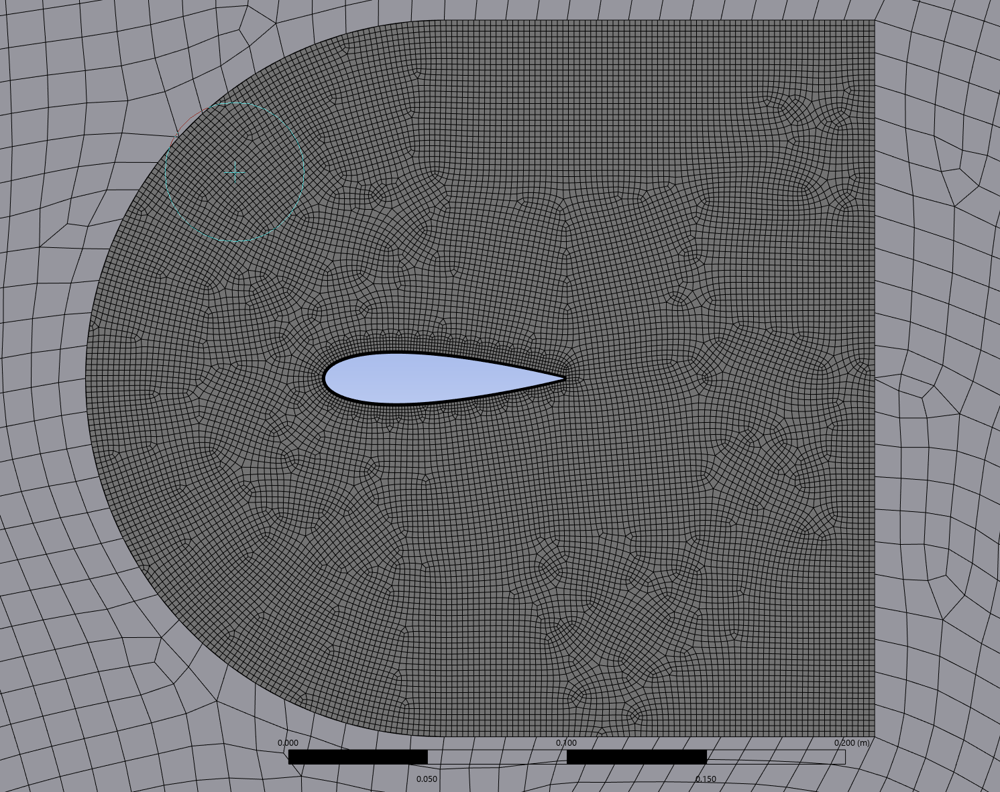
Local BOI refinement used to increase resolution
around each aerofoil and its developing wake.
Source: Author's own ANSYS mesh. Domain and meshing strategy
based on Syawitri et al. (2020).
Rotating-core element size12 mm
Far-field element size50 mm
Aerofoil divisions174
Trailing-edge divisions14
Near-wall treatment
I targeted
y+ ≈ 1
around the aerofoils.
The inflation-layer setup used 15 layers,
a first-layer height of approximately
1.95 × 10−5 m and a growth rate
of 1.16.
This was intended to maintain sufficient
near-wall resolution for the Transition SST
component of the model and capture the
blade-surface behaviour feeding the
transient aerodynamic solution.
During the project, I began to think of y+
less as another mesh-quality target and more
as part of the underlying physics. Poor
near-wall resolution could alter separation
and unsteady blade loading before the
acoustic calculation had even begun.
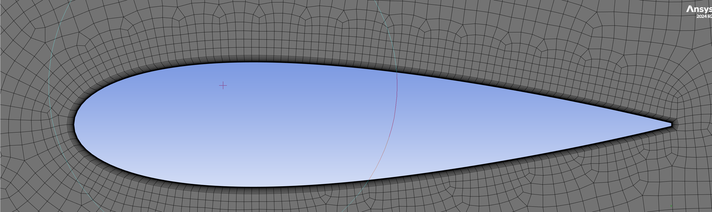
Inflation-layer structure used around
the aerofoil to target y+ ≈ 1.
Source: Author's own ANSYS mesh.
Mesh-selection strategy
I tested four mesh resolutions by varying the BOI
element size.
The mesh cases were used as an early screening study
rather than being taken through the entire final
transient run. Their early force histories showed
that the
2 mm BOI mesh
produced effectively the same aerodynamic response
as the finer
1.5 mm
case.
I therefore selected the 2 mm mesh for the full
simulation. The full case was then run through
repeated rotor revolutions while monitoring lift,
drag, moment and power coefficients.
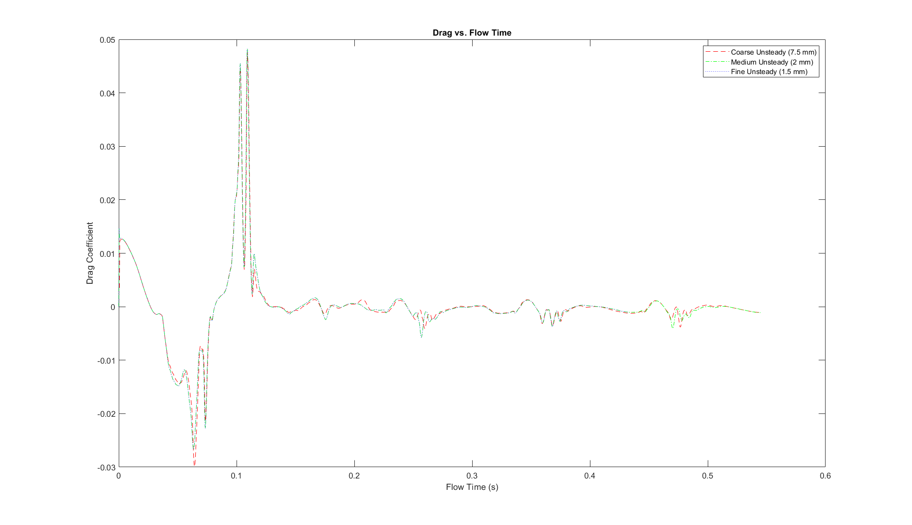
Comparison of the candidate mesh
resolutions used to select the final
BOI size.
Source: Author's own simulation and
post-processing.
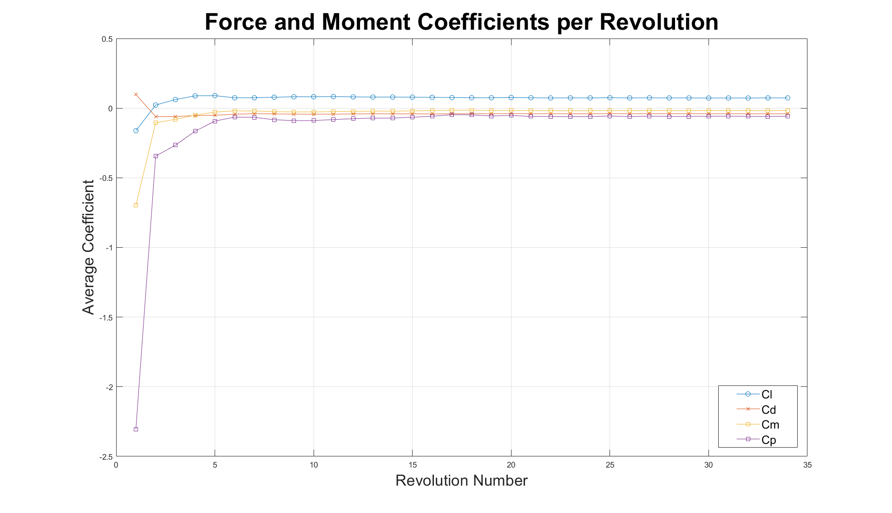
Average force and power coefficients
over successive rotor revolutions.
Source: Author's own simulation and
MATLAB post-processing.
03
Aerodynamic results
The solution became periodic, but did not fully
reproduce the reference aerodynamics
My predicted Cp
≈ 0.13
Syawitri et al.
≈ 0.27
Force histories and power coefficient
The simulation initially produced large startup
fluctuations in the aerodynamic coefficients.
Over successive revolutions, the lift, drag, moment
and power histories settled into repeatable periodic
behaviour.
That gave me a stable basis from which to calculate
aerodynamic performance and compare the model with
the reference study.
The most significant quantitative discrepancy was
the power coefficient. At TSR = 3.3, my simulation
predicted approximately
Cp ≈ 0.13,
compared with approximately
Cp ≈ 0.27
in Syawitri et al.
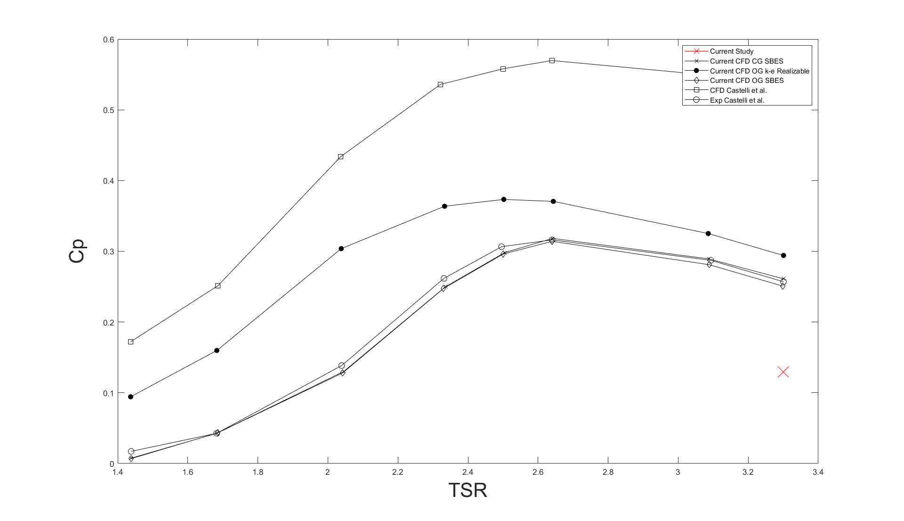
My calculated power coefficient at
TSR = 3.3 compared with the published
aerodynamic results used for validation.
Reference data: Syawitri et al. (2020)
and Castelli et al. (2010). Current-study
result and comparison plot: author's own work.
Vorticity comparison
The flow-field comparison showed that the difference
was not limited to a single performance coefficient.
At corresponding rotor positions, the vorticity
contours from Syawitri et al. showed strong vortex
structures developing around the blades and clear
interaction between turbulence shed from one blade
and the next blade in the rotor cycle.
My simulation showed noticeably weaker vortex
structures and less developed turbulence in the
rotating region.
This became particularly important because the same
unsteady flow field subsequently formed the basis of
the acoustic calculation.
Current study
Weaker vortex development and reduced turbulence
within the rotating region.
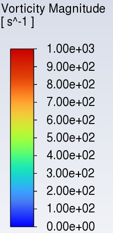
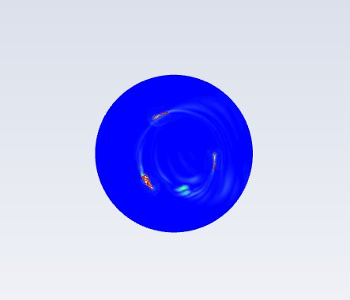
135°
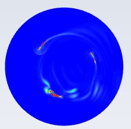
150°
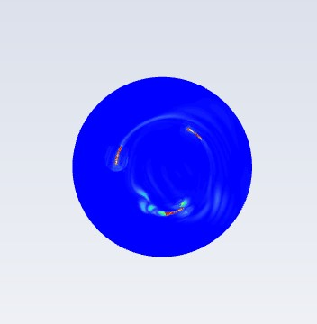
180°
Source: Author's own ANSYS Fluent simulation.
Syawitri et al. (2020)
Stronger vortex structures and more pronounced
blade-to-blade wake interaction.
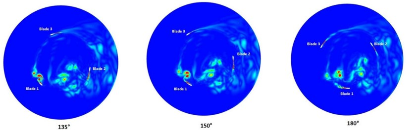
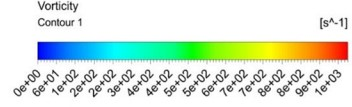
Source: Syawitri et al. (2020).
04
Acoustic extension
Using the unsteady flow field to investigate
far-field acoustic behaviour
FW-H setup
After completing the aerodynamic simulation,
I extended the model using Fluent's
Ffowcs Williams-Hawkings acoustic analogy
.
I used four omnidirectional receivers,
each positioned
1 m from the rotor centre.
Receiver 1 was downstream, Receiver 4
upstream, with Receivers 2 and 3 positioned
above and below the rotor respectively.
The aim was not to produce a detailed polar
directivity map, but to compare wake-side,
upstream and lateral acoustic behaviour.
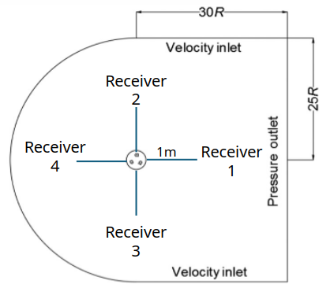
Four omnidirectional FW-H receiver
positions, each located 1 m from the
rotor centre.
Source: Author's own ANSYS Fluent
acoustic setup.
Receivers4
Receiver distance1 m
Sound speed340 m/s
Reference pressure
2 × 10−5 Pa
Pressure-time histories
Before analysing the spectra, I inspected the raw
pressure-time histories from all four receivers to
confirm that the exported signals contained coherent
transient data.
Receiver 1, positioned downstream in the wake,
showed the largest pressure excursions, reaching
a peak of approximately
155 Pa
in the recorded history.
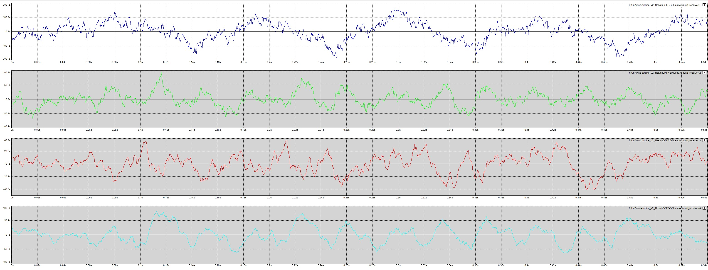
Pressure-time histories recorded at the
four FW-H receiver positions.
Source: Author's own ANSYS Fluent
acoustic results.
Blade-passing frequency
For a three-bladed rotor, I calculated the
theoretical blade-passing frequency using:
BPF = (blade count × RPM) / 60
At TSR = 3.3, this gave:
BPF ≈ 27.54 Hz
This gave me a physically expected tonal frequency
against which to compare the spectra.
Receiver 4, located upstream, produced the clearest
tonal component near the expected BPF. The observed
peak was approximately
25.82 Hz,
corresponding to a difference of roughly
6.2%.
Receiver 1 behaved differently. Because it sat
directly in the wake, its spectrum was more strongly
dominated by low-frequency content and the
blade-passing tone was less clearly defined.
My interpretation was that the wake-side signal
contained a greater contribution from wake
turbulence and unsteady blade loading, while the
upstream receiver provided a cleaner view of the
rotor-periodic tonal component.
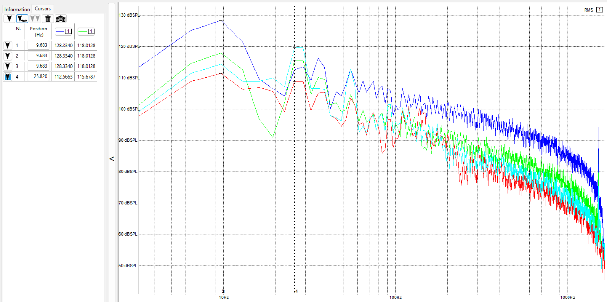
Calculated SPL spectra showing differences
between the upstream, downstream and lateral
receiver signals.
Source: Author's own ANSYS Fluent
acoustic results.
05
Limitations
Why the model diverged from the reference study
The limitations were closely connected rather than
independent. Most ultimately traced back to the
computational resources available for the project.
01
Computational resources
The Transition SST + SBES model was computationally
expensive.
Greater BOI refinement increased the cell count,
while reducing the timestep increased the number
of solver steps required for every revolution.
Fully converging several mesh cases, testing
additional timesteps and repeating the simulation
across several TSRs would have multiplied that
cost further.
I did not have the computational access required
to carry out all of those studies at the fidelity
I would have preferred within the time available.
02
Mesh fidelity and aerodynamic underprediction
The Cp comparison and vorticity fields suggested
that my local flow solution was more dissipative
than that of Syawitri et al.
Weaker vortex structures, reduced turbulence
within the rotating region and smoother pressure
gradients were consistent with insufficient local
resolution contributing to numerical damping.
The mesh-selection study was also a practical
screening exercise rather than a fully converged
formal grid-independence study.
03
Timestep and Courant number
The final timestep was approximately
3 × 10−4 s, corresponding to
about 1° of rotor movement.
In my case, this produced local Courant
numbers of approximately 10 in parts of
the domain.
A smaller timestep would have improved
temporal resolution and reduced numerical
damping, but it would also have
substantially increased the computational
cost of every rotor revolution.
This became particularly important because
the same timestep was later inherited by
the acoustic analysis.
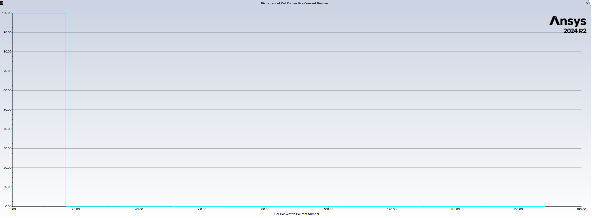
Cell convective Courant-number output
from the final transient simulation.
Values in parts of the domain reached
approximately 10.
Source: Author's own ANSYS Fluent
simulation.
04
Acoustic bandwidth
Once I extended the model into acoustics, the CFD
timestep also became an acoustic sampling
interval.
Using the Nyquist criterion:
fmax = 1 / (2Δt)
the maximum theoretical resolvable frequency was
approximately
1.67 kHz.
The model therefore could not represent the full
human-audible range of approximately
20 Hz–20 kHz, limiting the analysis of
higher-frequency acoustic behaviour.
05
Two-dimensional modelling
The simulation was two-dimensional and therefore
could not reproduce genuinely three-dimensional
flow behaviour.
Effects such as spanwise flow, blade-tip vortices,
finite-height losses and the full three-dimensional
development of turbulent structures were absent
from the model.
This limited both the aerodynamic fidelity and the
range of acoustic source mechanisms that could be
represented.
06
Acoustic validation
The FW-H spectra were not validated against a
directly corresponding experimental microphone
dataset.
Combined with the aerodynamic underprediction and
limited acoustic bandwidth, this means I would not
present the calculated SPL values as experimentally
validated absolute noise levels for a physical
turbine.
I am more confident using the acoustic results to
discuss frequency behaviour, the location of the
blade-passing tone, differences between upstream
and wake-side receivers, and the way limitations
in the CFD solution propagate into an acoustic
prediction.
06
Reflections
What changed in the way I approach numerical modelling
01
Convergence is not validation
The aerodynamic coefficients eventually
became periodic, but the model still
underpredicted Cp substantially and produced
weaker vortex structures than the primary
paper.
A solver reaching a repeatable solution does
not mean that the physical model has been
validated.
02
Matching a published setup is not the same
as reproducing the published result
I began the project expecting that
reproducing the geometry, turbulence model
and approximate timestep would put my result
reasonably close to the reference study.
The aerodynamic comparison showed how
strongly high-fidelity CFD depends on local
mesh resolution, timestep, numerical
dissipation and available compute.
03
The acoustic model inherited the aerodynamic
weaknesses
Initially, I thought of FW-H as a somewhat
separate analysis stage added after the CFD.
By the end of the project, I saw it as being
fundamentally dependent on the quality of
the preceding flow solution.
If a vortex is under-resolved, its associated
pressure fluctuation is weakened. That
weakened pressure field then becomes the
acoustic source.
04
The timestep acquired a second physical
meaning
For the aerodynamic simulation, the timestep
primarily controlled rotor movement and
transient-flow resolution.
For the acoustic analysis, the same timestep
became a sampling interval and directly
limited the highest frequency that could be
resolved.
05
Compute is an engineering resource
The highest-fidelity setup I could imagine
was not necessarily the setup I could
realistically run.
I had to decide where additional computation
would provide the most value, what could be
simplified and how those compromises would
limit the claims I made from the results.
07
Future work
What I would change with greater computational access
Treat successful aerodynamic replication as a gate
before beginning the acoustic extension.
Refine the BOI mesh until both Cp and vortex
development more closely match Syawitri et al.
Run all mesh cases to periodic convergence and
perform a formal mesh-convergence study.
Perform a dedicated timestep-sensitivity study.
Reduce the timestep to improve Courant number and
scale resolution.
Choose the acoustic timestep based on the frequency
range I intend to resolve rather than simply
inheriting the aerodynamic timestep.
Move to a three-dimensional simulation.
Use Q-criterion or λ₂ visualisation to link vortex
structures more directly with acoustic events.
Compare the predicted spectra with experimental
microphone measurements.
Investigate several tip-speed ratios rather than
restricting the final acoustic analysis to
TSR = 3.3.
08
References
Principal literature used in the project
Primary replication study
Syawitri, T.P., Yao, Y., Yao, J. and
Chandra, B. (2020).
Assessment of stress-blended eddy simulation
model for accurate performance prediction
of vertical axis wind turbine.
International Journal of Numerical Methods for
Heat & Fluid Flow, 31(2), pp. 655–673.
Geometry and aerodynamic validation
Castelli, M.R., Ardizzon, G., Battisti, L.,
Benini, E. and Pavesi, G. (2010).
“Modeling strategy and numerical validation
for a Darrieus Vertical Axis Micro-Wind
Turbine.”
Proceedings of the ASME 2010 International
Mechanical Engineering Congress and Exposition,
Vol. 7, pp. 409–418.
Additional literature
Ma, L., Wang, X., Zhu, J. and Kang, S.
(2019).
Dynamic Stall of a Vertical-Axis Wind
Turbine and Its Control Using Plasma
Actuation.
Energies, 12(19), 3738.
Viqueira-Moreira, M. and Ferrer, E.
(2020).
Insights into the Aeroacoustic Noise
Generation for Vertical Axis Turbines in
Close Proximity.
Energies, 13(16), 4148.
Pearson, C.E. and Graham, W.R.
(no date).
Noise from a Model-Scale Vertical-Axis
Wind Turbine.
Wang, W.-Y. and Ferng, Y.-M. (2024).
Numerical model for noise reduction of
small vertical-axis wind turbines.
Wind Energy Science, 9(3), pp. 651–664.
09
Original deliverable
Project presentation
The presentation below was the final assessed
deliverable for the project. It contains the original
methodology, ANSYS setup, aerodynamic histories,
flow-field comparisons and acoustic results.